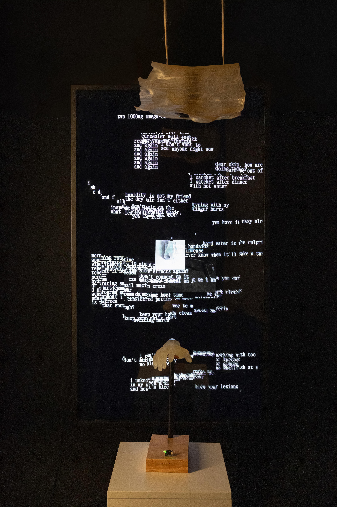
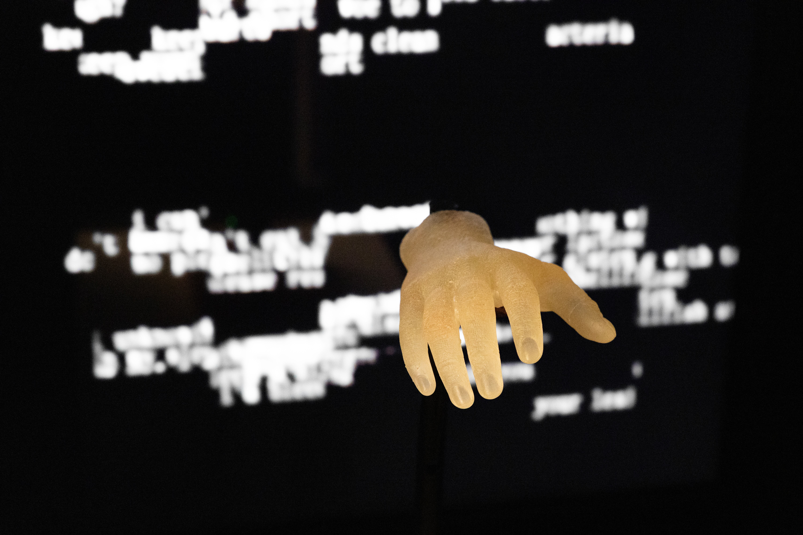
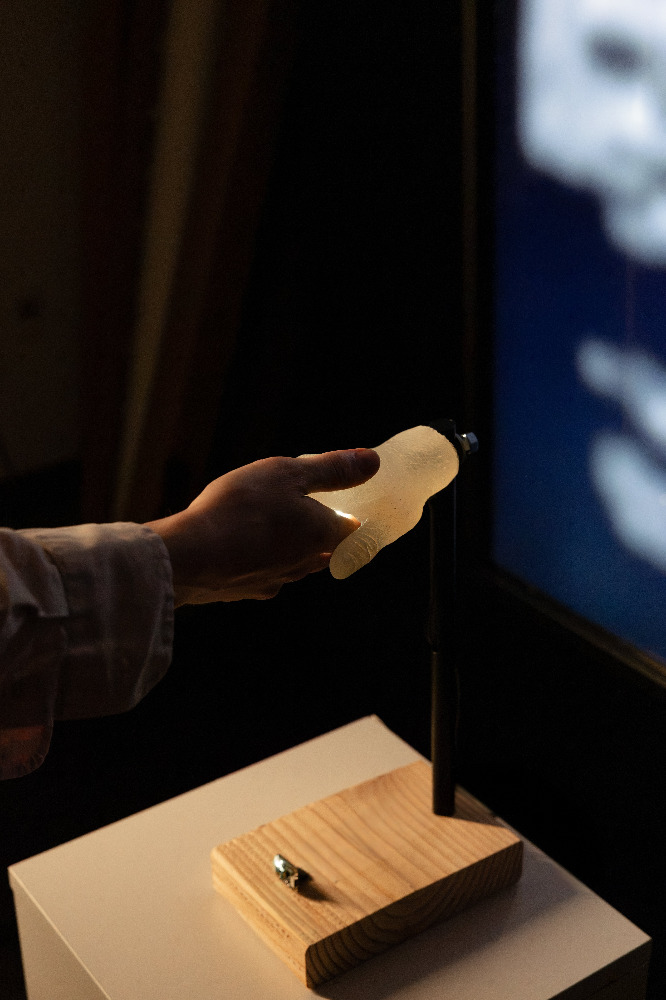
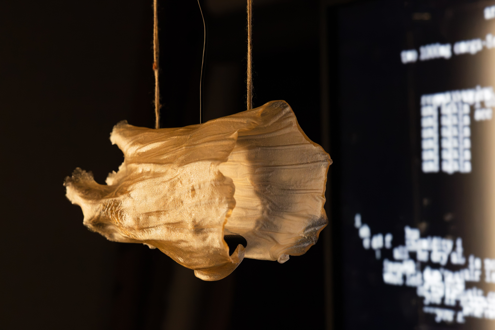

An interactive installation created in response to the artist’s experience living with eczema.
The human body is rich in context and history — it is a living, ever-growing archive. Every mark, every
ridge, is a quiet clue of where you’ve been and what you’ve done. Our weals are badges of resilience. and still,
we are conditioned to hide them. How can we acknowledge – and better appreciate – the value of our embodied
archive? In our ever-fluctuating circumstances, surroundings, and bodies: how can we move through these objects
of resistance with courage and steadfastness?
This work serves as a relief — a digital relief in its virtual layers that fall back and rise to the
surface, and an emotional relief towards the artist in her process.
Made with p5.js, arduino, and biomaterial.



